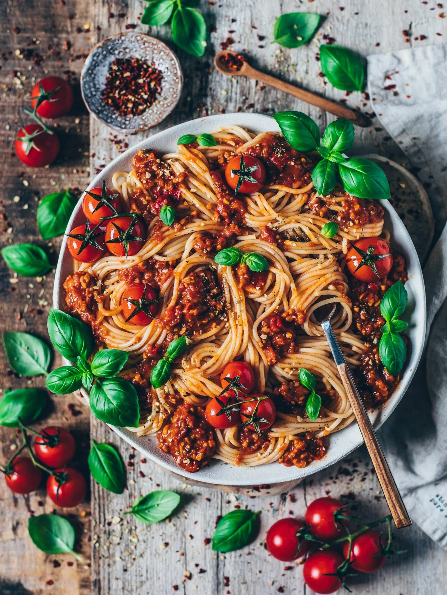

Bolognese
Ingredients:
- 2 Onions
- 2 Celery stalks
- 5 Cloves of garlic
- 2 Red chilies de-seeded
- 500-700 grams of mince
- 800 grams of canned tomatoes
- 2 teaspoons of tomato purée
- Beef or Chicken stock
- Salt
- Pepper
- Oregano
- Basil
- Parmesan Cheese
Instructions:
- Chop onions, celery and garlic finely
- Add 2 tablespoons olive oil into the pan
- On medium high heat cook the onions, chilies and celery until translucent
- Add garlic and mince, stir with vigor
- Once the mince has browned add tomato purée, cook for 1 min
- Add canned tomatoes, stir with vigor
- Add a pinch of salt, pepper, oregano and some stock
- Leave on a low simmer with cracked lid for 40 minutes or more
- Boil pasta in salted water
- Add a scoop of pasta cooking water to the sauce
- Serve with grated parmesan and basil to taste